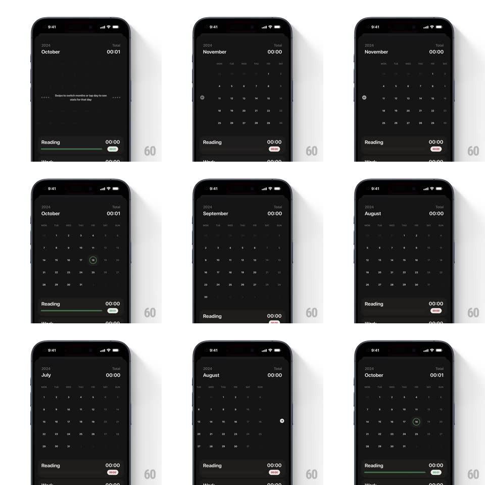

Media
Frame-by-frame

Rebuild this interaction 1:1: Emphasis's calendar navigation - a springy horizontal swipe moves between months in a dark-themed month grid (October, November, August...), and tapping a day highlights it with a soft circle while the activity list below stays put.

Rebuild this interaction 1:1: Emphasis's calendar navigation - a springy horizontal swipe moves between months in a dark-themed month grid (October, November, August...), and tapping a day highlights it with a soft circle while the activity list below stays put.
## Integration
Integration: stack-agnostic spec - springs given as stiffness/damping, timed motions as duration + curve; map every value to your framework and animation library of choice.
## Scene
Near-black screen: year ("2024") and month name ("October") top-left with a total timer top-right, a weekday-labeled month grid, and a bottom list of tracked activities ("Reading", "Walk") with durations and colored progress bars.
## Motion spec
Pattern: paged month swipe with tap selection.
- Horizontal swipe: the month grid follows the finger 1:1; the next/prev month peeks in from the edge.
- Release: the grid springs to the nearest month page (spring ~380/24, ~350ms, slight overshoot); the month name cross-fades/slides with it (the old name slides out in the swipe direction, the new one in, 200ms).
- Fast swipes chain: consecutive flings page through multiple months with momentum decay.
- Day tap: the tapped day gets a filled circle highlight (scale 0.6 -> 1, spring ~420/24, 180ms); the previous selection clears instantly.
- The bottom activity list stays fixed - only the calendar region pages.
## Calibration
- The grid is the only paged element; header totals and the activity list are stable anchors.
- Overshoot is subtle - a few pixels past the page edge before settling.
## Reduced motion
Months cross-fade (200ms) instead of sliding; selection appears without the scale spring.
## Don't miss
- The month name animation is tied to the swipe direction - never slides the wrong way.
- Day circles are the only color accent in the grid; the rest is monochrome.